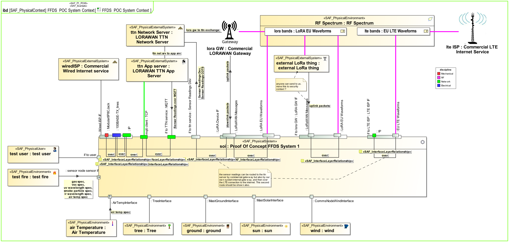
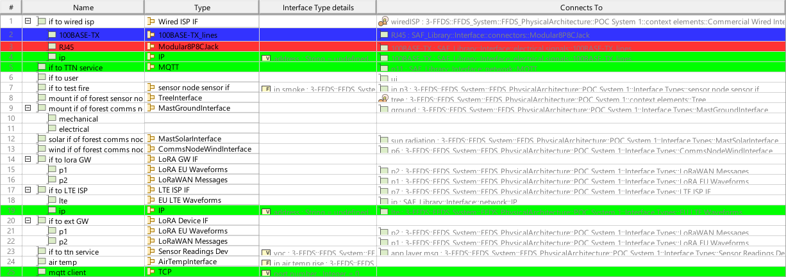

P1_PCXE Physical Context Exchange Viewpoint
| Domain | Aspect | Maturity |
|---|---|---|
| Physical | Context & Exchange |


The Physical Context Exchange Viewpoint focuses on the identification of the physical interfaces with external entities and relevant documentation. It is used to capture interface design requirements, applicable standards, protocols and format specifications, that are agreed upon the interfaces.
The Physical Context Exchange Viewpoint supports the “create system design” activity part of the “Design Definition Process” activities of the INCOSE SYSTEMS ENGINEERING HANDBOOK 2023 [§2.3.5.5] and contributes to the artifacts “System Design Description” and “System Interface Definition”.
Furthermore, the viewpoint supports the “Interface Management” approach of the INCOSE SYSTEMS ENGINEERING HANDBOOK 2023 [§3.2.4].
A) For each given context, an internal block diagram (IBD is used to identify the physical interfaces, the item flows, that are exchanged on that interfaces, and related documentation. Note: To understand the interfaces, a mapping of protocol layers may be depicted.
B) A tabular format providing a list of all the defined external interfaces and the applicable documentation
C) A tabular format listing the applicable standards, protocols and formats for the item flows exchanged via the identified interfaces.
The following Stereotypes / Model Elements are used in the Viewpoint: